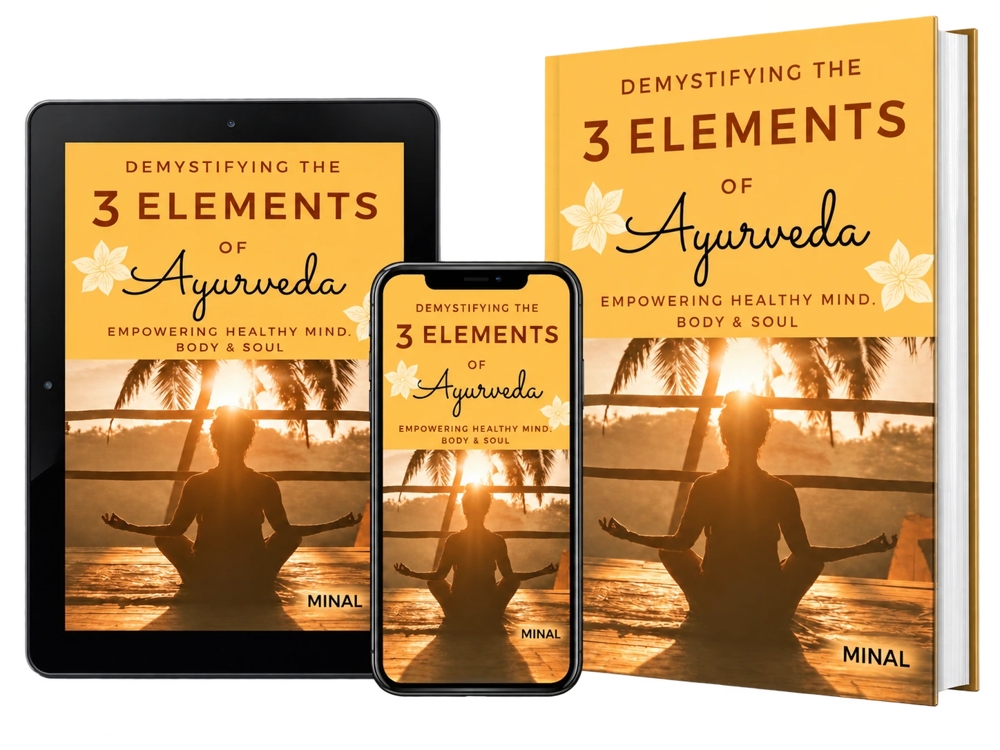

Understand.
Prevent. Heal. Grow.
Thoughtful perspectives on emotional well-being, human behaviour and the way our personal and professional lives connect. A welcoming place to learn, reflect and reach out.
Not sure where to begin? Explore approachable resources, or send a brief enquiry.
Support shaped around real life.
Different seasons of life ask different things of us. Explore the path that feels closest to what you need right now.
People first.
Always.
Minal Marudkar brings together education in clinical psychology, experience in human resources, counselling-related training, research and authorship.
Her work and interests explore the connection between emotions, behaviour, workplace experiences and mind-body well-being. She values empathy, clear communication and an approach that respects each person’s circumstances.
When life feels heavier than usual.
You may be looking for support with one clear concern, or simply know that something does not feel right. Both are valid places to begin.

Exploring well-being beyond one dimension.
Minal is the author of Demystifying the 3 Elements of Ayurveda: Empowering Healthy Mind, Body & Soul, reflecting her interest in the relationship between mind, body and overall well-being.
Published research
Her 2026 M.A. Psychology research explored sleep quality, emotional regulation and mood stability among working professionals in the Mumbai Metropolitan Region and was published in the Journal of Advance and Future Research.
View the publication ↗You can start with a conversation.
There is no pressure to know exactly what you need. Start with a brief Telegram enquiry to discuss what kind of support may be helpful.